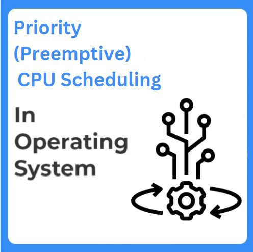

Priority Preemptive Scheduling
Preemptive Priority CPU Scheduling Algorithm is a pre-emptive method of CPU scheduling algorithm that works based on the priority of a process. In this algorithm, the scheduler schedules the tasks to work as per the priority, which means that a higher priority process should be executed first. In case of any conflict, i.e., when there is more than one process with equal priorities, then the pre-emptive priority CPU scheduling algorithm works on the basis of FCFS (First Come First Serve) algorithm.
